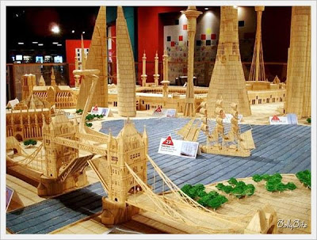
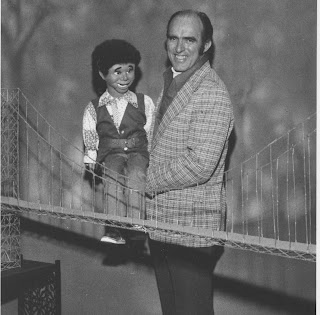

Just toothpicks...
12/19/2009
{kind=link}

I began building objects and structures with toothpicks when I was in the 5th grade.{kind=link}

I thought I had accomplished an impressive feat when in 1957 I built a toothpick suspension bridge from 5,000 toothpicks. Even the Diamond Company was impressed - they published the story, with a photo, in their trade magazine. But records are simply seen as a challenge to many people, including those who decide on a toothpick construction career. And in that field of endeavor, Stan Munro, must certainly rule supreme!Stan Muro has constructed a miniature city made out of millions of toothpicks! It took 38 year old Munro 6 years to build his toothpick city. (You see a portion of it in the upper photo.) He used 6 million toothpicks and 170 litres of glue. He can spend up to 6 months to create a building and each of his creations is built to 1:164 scale. He works at the Museum of Science and Technology in Syracuse , New York ( USA ).
I'm humbled! I'll stick to puppet making, but I can honestly tell you that for me, it all started with toothpicks!